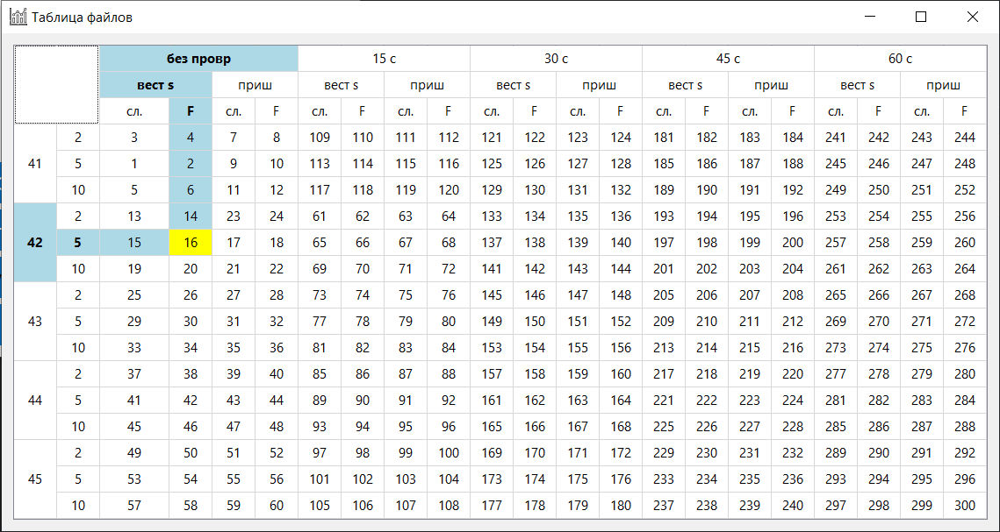
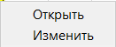

При выборе опции «Открыть график через таблицу» в программе отображается таблица файлов, представленная на рисунке ниже.

Рис. 1 - Основной интерфейс таблицы файлов
Таблица содержит данные о различных файлах, их характеристиках, времени записи и номере импланта. При наведении на определенный номер файла подсвечиваются его параметры, такие как время, sample, type, type_2 и subtype.
Для взаимодействия с файлом в таблице необходимо нажать правую кнопку мыши на интересующей ячейке. После этого появится контекстное меню, как показано на следующем рисунке:

Рис. 2 - Контекстное меню с опциями «Открыть» и «Изменить»
В контекстном меню доступны две опции:
Использование таблицы позволяет легко находить нужные файлы, просматривать их параметры и открывать соответствующие графики.